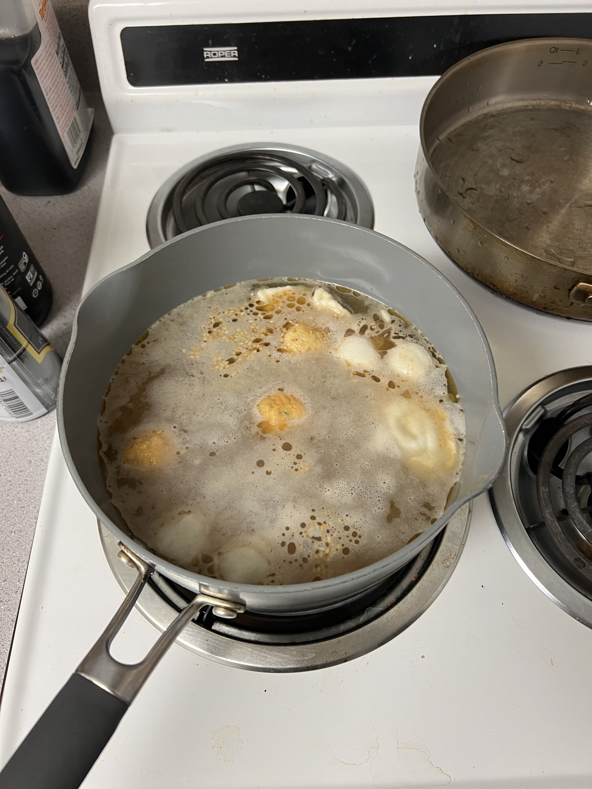

Soup Noodles

Description
Soup noodles are perfect for lunch or dinner, especially if it's cold out! They are highly customizable so feel free to add whatever you want into the pot and make this recipe your own.
Ingredients:
- 1 serving of noodles — these can be fresh noodles, dried noodles, thick or thin!
- 1 spoonful of miso paste
- 1 pour of light soy sauce
- 1 tablespoon of chicken powder
- 1 tablespoon of sesame oil
- 1 small chunk of dried seaweed
- A handful of assorted fish balls
- A handful of soup dumplings
- Water
Instructions:
- Prepare your noodles, whether by soaking them in hot water or cooking them beforehand.
- Fill your pot with enough water and bring it to a boil.
- Add the miso paste, soy sauce, chicken powder, and dried seaweed.
- As soon as the miso paste is dissolved, add in the fish balls and soup dumplings, then bring the pot to a simmer.
- When the fish balls and soup dumplings are cooked through, add in your noodles and turn the heat off.
- Add the sesame oil and serve.
Go back to my other recipes by clicking here.